Here are some other tools that you should have:
Screwdriver set: Both Philips and standard.
Pliers set: Standard needle-nose, long-nose, and curved-nose.
Wrenches and nut driver: In a range of sizes.
Sheet metal shears, nibbling tool, and sheet metal bender: For cutting sheet metal (shears) or removing small pieces of metal (nibbling tool). With a bender, you can create your own metal enclosures.
IC remover: To get small ICs out of sockets without damaging the pins.
Tweezers: For small work, such as positioning surface-mount components.
Calipers: Used for determining component lead diameters, component sizes, board thickness, and so on.
Magnifying glass: For inspecting boards, wires, and components for cracks, flaws, hairline solder shorts, and cold-soldered joints.
X-acto knife: For general-purpose cutting.
Clip-on heat sink: Clamps on component leads to absorb or dissipate heat during soldering and desoldering.
Dremel tool: With cutting, sanding, milling, and polishing attachments.
Power drill (drill press): For drilling holes in PCBs, enclosures, and so on.
Files: For enlarging holes and slots; removing burrs; shaping metal, wood, or plastic; and cleaning metal surfaces before soldering.
Wire-wrap tools: Only if you plan to use wire-wrap construction techniques. Get a proper-sized hand-wrapping tool, along with bits for your wire-wrap wires (30 AWG is the most common).
Vise and circuit board holder: PanaVise makes some excellent vises and board holders.
Hack saw: Used for cutting bolts and sheet and beam metal, as well as PCBs.
7.5.19 Wires, Cables, Hardware, and Chemicals
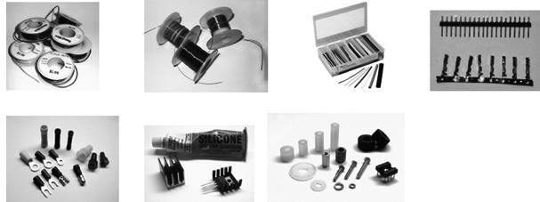
FIGURE 7.74 (a) Hookup wire. (b) Magnet wire. (c) Heat-shrinkable tubing. (d) 0.100-in. male headers and 0.156-in. female crimp sockets. (e) Butt connectors, ring, spade, crimp-on quick disconnects, wire nuts. (f) Heat sinks and heat sink compound. (g) Nylon and aluminum standoffs, washers, bolts, rubber feet, and IC socket.
Wire and Cable
Get a selection of solid and strained hookup wire with different color coatings and gauges (16, 22, and 24 gauges are sufficient for most purposes). Jumper wire used for solderless breadboards can be made using solid 22-AWG hookup wire or ready-made male-to-male jumpers. If you desire flexible jumpers that won’t break as easily as solid-wire jumpers, you can use 22- or 24-AWG stranded hookup wire with 0.156-in. female crimp pins (with optional 0.100-in. male headers soldered in). See Fig. 7.75 for construction details.
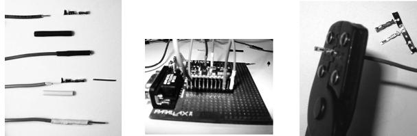
FIGURE 7.75 Making your own stranded-wire, square header jumpers, using hookup wire, female 0.156-in. crimp sockets (solder a 0.100-in. male header pin into the socket for a male jumper), and 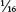- to  -in. shrink tubing. A crimping tool is needed to fasten sockets to wire, although you might get away with using needle-nose pliers and a bit of finesse.
-in. shrink tubing. A crimping tool is needed to fasten sockets to wire, although you might get away with using needle-nose pliers and a bit of finesse.
Other types of wire and cable worth keeping in stock include flat ribbon cable (28 AWG), CAT5 network cable, twisted-pair cable (24 AWG), coaxial cable (RG-59, RG-11, and so on), and household electrical wire, such as NM-B (indoor) or UF-B (outdoor). And don’t forget wire-wrap wire if you intend on doing wire-wrap circuit board construction. The #30 wire with a Kynar jacket is perhaps the most popular type, although you might need larger wire for higher current runs.
Magnet wire (see Fig. 7.74b) is used to build custom coils and electromagnets or anything that requires a large number of loops, such as a tuning element in a radio receiver. Magnet wire is built of solid-core wire and is insulated by a varnish coating. A nice assortment of magnet wire ranging in gauge from 22 to 30 comes in handy.
Heat-Shrinkable Tubing
Heat-shrinkable tubing (see Fig. 7.74c) is a necessity for covering exposed wires and terminal connections, as well as combining a number of different wires together into a tight, single multiconductor cable. You can buy spools of tubing or purchase kits with short pieces of various color and diameter. Standard inner diameters of shrinkable tubing before heat is applied include 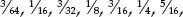
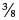, ½, 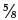, ¾, 1, 2, 3, and 4 in. A common shrink ratio is 2:1 (50 percent), so a -in. tube would shrink to in., and so forth. However, you might also find shrink ratios of 3:1. A heat gun, or often even a hair dryer, can be used to shrink the tubes.
Interconnects
For temporary wire-to-wire connections, wire nuts, butt connectors, and various pin-and-socket connectors should be at hand (see Fig. 7.74d and e). Wire nuts simply twist wires together and enclose the connection. Butt connectors join two different wire ends together within a metal-insulated crimped tube. Pin-and-socket connectors use various friction-fit mechanisms—male end on one wire, female end on the other.
For connecting wires to more permanent structures, such as PCBs and chassis, a variety of connectors can be used. For PCBs, 0.100-in. male headers (straight or right-angle) with corresponding 0.156-in. female crimp sockets are extremely useful. For larger connections, PCB-mount terminal blocks or chassis terminal blocks with corresponding solderless terminals (what gets attached to the wire) are ideal. Look for solderless terminal kits that include male and female spade terminals, quick disconnect, and ring terminals, to accommodate various wire gauges.
More Hardware
Here are some additional hardware items to keep on hand (see Fig. 7.74g):
Battery holders: AAA, AA, C, D, 9-V, and coin.
Heat sinks: TO-3, TO-92, TO-202, TO-218, TO-220, and DIP case styles. Also get heat-sink compound.
Standoffs: Aluminum and brass thread standoffs of 4-40, 6-32 thread of various lengths.
Hardware: Machine screws (4-40, 6-32), hex nuts (4-40, 6-32), and flat, split-lock washers (4, 6, and 8).
Adhesive rubber feet: For project boxes, to prevent slipping and surface scratches.
Transistor and IC sockets: Primarily 8, 14, and 16-pin DIP sockets.
Instrumentation knobs: -in. and ¼-in. shaft diameters with a screw to secure the knob to the shaft. These are used on potentiometers and the like.
Enclosures: Plastic and aluminum, with PCB mounting hardware.
Sheet metal: This is usually sold in large sheets, 4 × 8 ft or larger, and is used for making metal chassis.
Wire-wrap hardware: You will need this if you plan on using wire-wrap construction techniques. Get assorted posts, IC sockets, and so on.
Chemical-Related Items
Following are some other items to stock:
Epoxy: Two-part epoxy resin works well for joining odd-shaped items together. It creates a thick, strong bond. Try to find one that dries clear.
Silicon adhesive: This is useful for gluing components, such as Molex connectors, to circuit boards. Silicon adhesive can stand high temperatures, which is good for anything that holds a part to be soldered. It also dries to a rubbery consistency, so it can be peeled off if the component needs to be removed.
Deoxidizers and cleaners: An example is DeoxIT, which acts as a deoxidizer, cleaner, and preservative for metal electrical connections, such as switches, relay contact pads, and banana and audio plugs.
Defluxer: This is used for removing flux from soldered boards. It prevents low-resistance bridges from forming.
Antioxidant joint compound: An example is Nolox, which is good for ensuring that electrical connections don’t corrode under moist conditions. For example, if you’re running low-voltage landscape wires to lights or other outdoor projects using wire-nut connections, apply a dab of the compound to the wire connections before securing things together with a wire nut.
Conductive writer and circuit sealer pens: A conductive silver-based ink pen, such as the CircuitWriter by CAIG Laboratories Inc., is handy for fixing up corroded or damaged circuit board traces. The pen is used to redraw the ruined traces. A carbon-based ink pen is good for coating button contacts and membranes, where soldering is out of the question. In addition, an acrylic-based sealer pen can be used to provide conductive and oxidation protection to unprotected and newly drawn traces.
Circuit chiller: This is used to rapidly cool components and for troubleshooting intermittently faulting capacitors, resistors, semiconductors, and other defective components. It also detects cold solder joints, cracks in PCBs, and oxidized junctions.
PCB chemicals: Kits will usually already have all the necessary items, but extra resist, tape, resist pens, paint, rub-on transfer, and etchant can’t hurt.
7.5.20 Electronics Catalogs
Order a variety of paperback catalogs from companies such as Digi-Key, Jameco, and Mouser Electronics, and keep them handy in your laboratory. Here are some popular sources to check out:
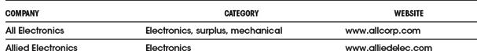
Many of these suppliers will ship worldwide. The following are some other international suppliers of note:
The Octopart website (www.octopart.com) is a search engine designed for finding electronic parts, and it’s a great way to locate suppliers for a particular part. There are also online auction sites.
7.5.21 Recommended Electronics Parts
If you’re serious about electronics, you’ll want a decent stockpile of electronics components that you can resort to when unforeseen needs arise. Fig. 7.76a and 7.76b show a suggested stockpile for your laboratory. While putting together your stockpile, you can cut down on cost by investing in component kits, such as resistor, capacitor, transistor, diode, LED, digital IC, and analog IC kits. Jameco (www.jameco.com), Digi-Key (www.digikey.com), and Mouser Electronics (www.mouser.com) sell various component kits.
FIGURE 7.76a
FIGURE 7.76b
Another great source for parts can be found within discarded consumer products, such as microwaves, stereos, printers, and breadmakers. Hack them apart, and you’ll be amazed what you find: high-voltage transformers, large motors, stepper motors, laser diodes, gears, switches, relays, capacitors, wire connectors, and so on. Store what you find in boxes, and later retrieve what you need.
7.5.22 Electronic CAD Programs
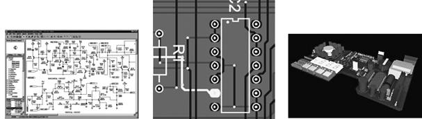
FIGURE 7.77
Electronic CAD programs are very important tools for learning, simulating, and constructing sophisticated circuits. Many software packages include schematic drawing, often simulation, and sometimes PCB design, autorouting, and even realistic 3D modeling. You can learn more about the various programs by surfing the Internet. Most of the software companies allow you to download a free demo version of their software. In addition, some of the most popular electronic CAD tools for hobby use are available for free (with restricted board size and layers) or as open source. Here are some CAD programs to check out:
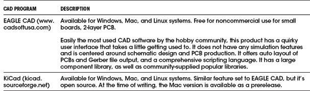
Here are a few commercial software packages worth checking out:
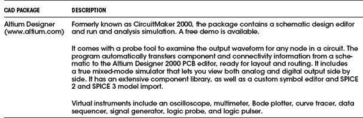
7.5.23 Building Your Own Workbench
After much deliberation, I decided I wanted a new workbench with a large tabletop, five shelves, a metal frame to which to attach things, a built-in backboard with power outlets, an on/off switch for a hanging fluorescent lamp, and a large wire-spool holding rod. The plans for building the workbench are shown in Fig. 7.78a and b. The whole design is based on a Pro Rack model 07200 from Do+ Able Products, Inc. The rack cost only about $90, and the whole project ended up costing around $400 plus a good day’s work. I got all the material at Home Depot, where they even cut all the wood for me for free.
FIGURE 7.78a
FIGURE 7.78b
Operational Amplifiers
Operational amplifiers (op amps) are incredibly useful high-performance differential amplifiers that can be employed in a number of amazing ways. A typical op amp is an integrated device with a noninverting input, an inverting input, two dc power supply leads (positive and negative), an output terminal, and a few other specialized leads used for fine-tuning. The positive and negative supply leads, as well as the fine-tuning leads, are often omitted from circuit schematics. If you do not see any supply leads, assume that a dual supply is being used.
Note that we have labeled the supply voltages +Vs and −Vs, as they are usually the same. However, they do not need to be, as you will see when we look at single-supply op amps in this chapter.
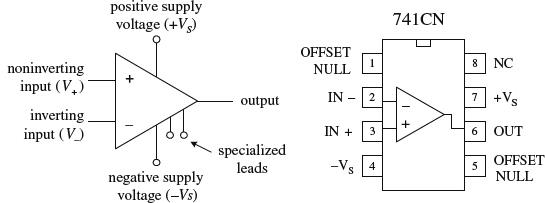
FIGURE 8.1
By itself, an op amp’s operation is simple. If the voltage applied to the inverting terminal V− is more positive than the voltage applied to the noninverting terminal V+, the output saturates toward the negative supply voltage −VS. Conversely, if V+ >
V−, the output saturates toward the positive supply voltage +VS (see Fig. 8.2). This “maxing out” effect occurs with the slightest difference in voltage between the input terminals.
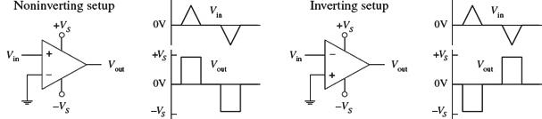
FIGURE 8.2
At first glance, it may appear that an op amp is not a very impressive device—it switches from one maximum output state to another whenever there’s a voltage difference between its inputs. Big deal, right? By itself, it does indeed have limited applications. The trick to making op amps useful devices involves applying what is called negative feedback.
When voltage is “fed” back from the output terminal to the inverting terminal (this is referred to as negative feedback), the gain of an op amp can be controlled—the op amp’s output is prevented from saturating. For example, a feedback resistor RF placed between the output and the inverting input, as shown in Fig. 8.3, acts to convey the state of the output back to the op amp’s input. This feedback information basically tells the op amp to readjust its output voltage to a value determined by the resistance of the feedback resistor. The circuit in Fig. 8.3, called an inverting amplifier, has an output equal to −Vin/(RF/Rin) (you will learn how to derive this formula later in this chapter). The negative sign means that the output is inverted relative to the input. The gain is then simply the output voltage divided by the input voltage, or −RF/Rin (the negative sign indicates that the output is inverted relative to the input). As you can see from this equation, if you increase the resistance of the feedback resistor, there is an increase in the voltage gain. On the other hand, if you decrease the resistance of the feedback resistor, there is a decrease in the voltage gain.
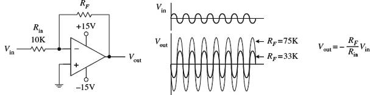
FIGURE 8.3
By adding other components to the negative-feedback circuit, an op amp can be made to do a number of interesting things besides pure amplification. Other interesting op amp circuits include voltage-regulator circuits, current-to-voltage converters, voltage-to-current converters, oscillator circuits, mathematical circuits (adders, subtractors, multipliers, differentiators, integrators, etc.), waveform generators, active filter circuits, active rectifiers, peak detectors, sample-and-hold circuits, etc. Most of these circuits will be covered in this chapter.
Besides negative feedback, there’s positive feedback, where the output is linked through a network to the noninverting input. Positive feedback has the opposite effect as negative feedback; it drives the op amp harder toward saturation. Although positive feedback is seldom used, it finds applications in special comparator circuits that are often used in oscillator circuits. Positive feedback also will be discussed in detail in this chapter.
8.1 Operational Amplifier Water Analogy
This is the closest thing I could come up with in terms of a water analogy for an op amp. To make the analogy work, you have to pretend that water pressure is analogous to voltage and water flow is analogous to current flow.
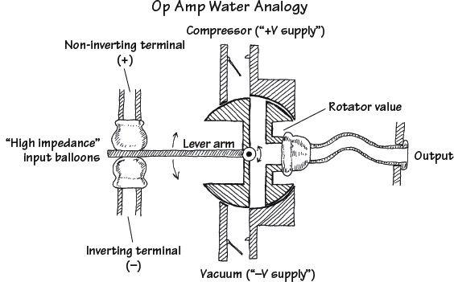
The inverting and noninverting terminals of the water op amp are represented by the two tubes with elastic balloon ends. When the water pressure applied to both input tubes is equal, the lever arm is centered. However, if the water pressure applied to the noninverting tube is made larger than the pressure applied to the inverting tube, the noninverting balloon expands and forces the lever arm downward. The lever arm then rotates the rotator valve counterclockwise, thus opening a canal from the compressor tube (analogous to the positive supply voltage) to the output tube. (This is analogous to an op amp saturating in the positive direction whenever the noninverting input is more positive in voltage than the inverting input.) Now, if the pressure applied at the non-inverting tube becomes less than the pressure applied at the inverting tube, the lever arm is pushed upward by the inverting balloon. This causes the rotator valve to rotate clockwise, thus opening the canal from the vacuum tube (analogous to the negative supply voltage) to the output. (This is analogous to an op amp saturating in the negative direction whenever the inverting input is made more positive in voltage than the noninverting input.) See what you can do with the analogy in terms of explaining negative feedback. Also note that in the analogy there is an infinite “input water impedance” at the input tubes, while there is a zero “output water impedance” at the output tube. As you will see, ideal op amps also have similar input and output impedance. In real op amps, there are always some leakage currents.
FIGURE 8.4
8.2 How Op Amps Work (The “Cop-Out” Explanation)
An op amp is an integrated device that contains a large number of transistors, several resistors, and a few capacitors. Figure 8.5 shows a schematic diagram of a typical low-cost general-purpose bipolar operational amplifier.
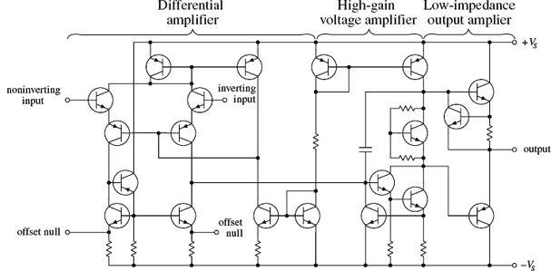
FIGURE 8.5
This op amp basically consists of three stages: a high-input-impedance differential amplifier, a high-gain voltage amplifier with a level shifter (permitting the output to swing positive and negative), and a low-impedance output amplifier. However, realizing that an op amp is composed of various stages does not help you much in terms of figuring out what will happen between the input and output leads. That is, if you attempt to figure out what the currents and voltages are doing within the complex system, you will be asking for trouble. It is just too difficult a task. What is important here is not to focus on understanding the op amp’s internal circuitry but instead to focus on memorizing some rules that individuals came up with that require only working with the input and output leads. This approach seems like a “cop-out,” but it works.
8.3 Theory
There is essentially only one formula you will need to know for solving op amp circuit problems. This formula is the foundation on which everything else rests. It is the expression for an op amp’s output voltage as a function of its input voltages V+ (noninverting) and V− (inverting) and of its open-loop voltage gain Ao:
Vout = Ao(V+ − V−)
This expression says that an ideal op amp acts like an ideal voltage source that supplies an output voltage equal to Ao(V+ − V−) (see Fig. 8.6). Things can get a little more complex when we start talking about real op amps, but generally, the open-loop voltage expression above pretty much remains the same, except now we have to make some slight modifications to our equivalent circuit. These modifications must take into account the nonideal features of an op amp, such as its input resistance Rin and output resistance Rout. Figure 8.6
right shows a more realistic equivalent circuit for an op amp.
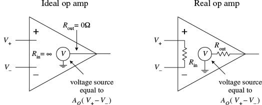
FIGURE 8.6
To give meaning to the open-loop voltage gain expression and to the ideal and real equivalent circuits, the values of Ao, Rin, and Rout are defined within the following rules:
Rule 1: For an ideal op amp, the open-loop voltage gain is infinite (Ao = ∞). For a real op amp, the gain is a finite value, typically between 104 to 106.
Rule 2: For an ideal op amp, the input impedance is infinite (Rin = ∞). For a real op amp, the input impedance is finite, typically between 106 (e.g., typical bipolar op amp) to 1012 Ω (e.g., typical JFET op amp). The output impedance for an ideal op amp is zero (Rout = 0). For a real op amp, Rout is typically between 10 to 1000 Ω.
Rule 3: The input terminals of an ideal op amp draw no current. Practically speaking, this is true for a real op amp as well—the actual amount of input current is usually (but not always) insignificantly small, typically within the picoamps (e.g., typical JFET op amp) to nanoamps (e.g., typical bipolar op amp) range.
Now that you are armed with Vout = Ao(V+ − V−) and rules 1 through 3, let’s apply them to a few simple example problems.
Solve for the gain (Vout/Vin) of the circuit below.
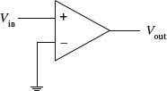
Since V− is grounded (0 V) and V+ is simply Vin, you can plug these values into the open-loop voltage gain expression:
Vout = Ao(V+ − V−)
= Ao(Vin − 0 V) = AoVin
Rearranging this equation, you get the expression for the gain:
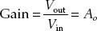
If you treat the op amp as ideal, Ao would be infinite. However, if you treat the op amp as real, Ao is finite (around 104 to 106). This circuit acts as a simple noninverting comparator that uses ground as a reference. If Vin > 0 V, the output ideally goes to +∞ V; if Vin < 0V, the output ideally goes to −∞ V. With a real op amp, the output is limited by the supply voltages (which are not shown in the drawing but assumed). The exact value of the output voltage is slightly below and above the positive and negative supply voltages, respectively. These maximum output voltages are called the positive and negative saturation voltages.
FIGURE 8.7
EXAMPLE 2
Solve for the gain (Vout/Vin) of the circuit below.
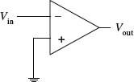
Since V+ is grounded (0V) and V− is simply Vin, you can substitute these values into the open-loop voltage gain expression:
Vout = Ao(V+ − V−)
= Ao(0 V − Vin) = −AoVin
Rearranging this equation, you get the expression for the gain:
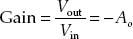
If you treat the op amp as ideal, −Ao is negatively infinite. However, if you treat the op amp as real, −Ao is finite (around −104 to −106). This circuit acts as a simple inverting comparator that uses ground as a reference. If Vin > 0 V, the output ideally goes to −∞ V; if Vin < 0 V, the output ideally goes to +∞ V. With a real op amp, the output swings are limited to the saturation voltages.
FIGURE 8.8
8.4 Negative Feedback
Negative feedback is a wiring technique where some of the output voltage is sent back to the inverting terminal. This voltage can be “sent” back through a resistor, capacitor, or complex circuit or simply can be sent back through a wire. So exactly what kind of formulas do you use now? Well, that depends on the feedback circuit, but in reality, there is nothing all that new to learn. In fact, there is really only one formula you need to know for negative-feedback circuits (you still have to use the rules, however). This formula looks a lot like our old friend Vout = Ao(V+ − V−). There is, however, the V− in the formula—this you must reconsider. V− in the formula changes because now the output voltage from the op amp is “giving” extra voltage (positive or negative) back to the inverting terminal. What this means is that you must replace V− with fVout, where f is a fraction of the voltage “sent” back from Vout. That’s the trick!
There are two basic kinds of negative feedback, voltage feedback and operational feedback, as shown in Fig. 8.9.
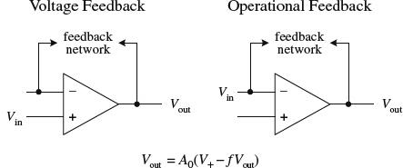
FIGURE 8.9
Now, in practice, figuring out what the fraction f should be is not important. That is, you do not have to calculate it explicitly. The reason why I have introduced it in the open-loop voltage expression is to provide you with a bit of basic understanding as to how negative feedback works in theory. As it turns out, there is a simple trick for making op amp circuits with negative feedback easy to calculate. The trick is as follows: If you treat an op amp as an ideal device, you will notice that if you rearrange the open-loop voltage expression into Vout/Ao = (V+ − V−), the left side of the equation goes to zero—Ao is infinite for an ideal op amp. What you get in the end is then simply V+ − V− = 0. This result is incredibly important in terms of simplifying op amp circuits with negative feedback—so important that the result receives its own rule (the fourth and final rule).
Rule 4: Whenever an op amp senses a voltage difference between its inverting and noninverting inputs, it responds by feeding back as much current/voltage through the feedback network as is necessary to keep this difference equal to zero (V+ − V− = 0). This rule only applies for negative feedback.
The following sample problems are designed to show you how to apply rule 4 (and the other rules) to op amp circuit problems with negative feedback.
Negative Feedback Example Problems
BUFFER (UNITY GAIN AMPLIFIER)
Solve for the gain (Vout/Vin) of the circuit below.
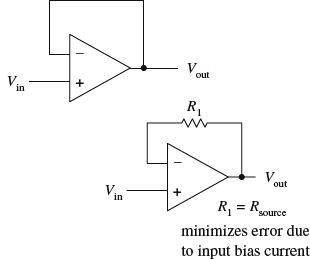
Since you are dealing with negative feedback, you can apply rule 4, which says that the output will attempt to make V+ − V− = 0. By examining the simple connections, notice that Vin = V+ and V− = Vout. This means that Vin − Vout = 0. Rearranging this expression, you get the gain:
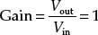
A gain of 1 means that there is no amplification; the op amp’s output follows its input. At first glance, it may appear that this circuit is useless. However, it is important to recall that an op amp’s input impedance is huge, while its output impedance is extremely small (rule 2). This feature makes this circuit useful for circuit-isolation applications. In other words, the circuit acts as a buffer. With real op amps, it may be necessary to throw in a resistor in the feedback loop (lower circuit). The resistor acts to minimize voltage offset errors caused by input bias currents (leakage). The resistance of the feedback resistor should be equal to the source resistance. I will discuss input bias currents later in this chapter.
FIGURE 8.10
Solve for the gain (Vout/Vin) of the circuit below.
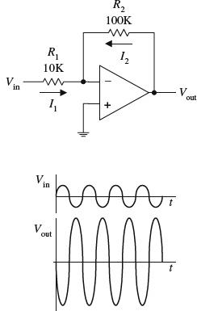
Because you have negative feedback, you know the output will attempt to make the difference between V+ and V− zero. Since V+ is grounded (0 V), this means that V− also will be 0 V (rule 4). To figure out the gain, you must find currents I1 and I2 so you can come up with an expression containing Vout in terms of Vin. Using Ohm’s law, you find I1 and I2 to be
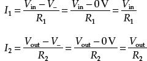
Because an ideal op amp has infinite input impedance, no current will enter its inverting terminal (rule 3). Therefore, you can apply Kirchhoff’s junction rule to get I2 = −I1. Substituting the calculated values of I1 and I2 into this expression, you get Vout/R2 = −Vin/R1. Rearranging this expression, you find the gain:
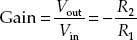
The negative sign tells you that the signal that enters the input will be inverted (shifted 180°). Notice that if R1 = R2, the gain is −1 (the negative sign simply means the output is inverted). In this case you get what’s called a unity-gain inverter, or an inverting buffer. When using real op amps that have relatively high input bias currents (e.g., bipolar op amps), it may be necessary to place a resistor with a resistance equal to R1||R2 between the noninverting input and ground to minimize voltage offset errors.
FIGURE 8.11
NONINVERTING AMPLIFER
Solve for the gain (Vout/Vin) of the circuit below.
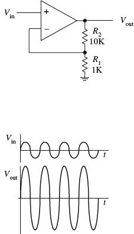
By inspection, you know that V+ = Vin. By applying rule 4, you then can say that V− = V+. This means that V− = Vin. To come up with an expression relating Vin and Vout (so that you can find the gain), the voltage divider relation is used:
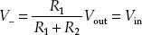
Rearranging this equation, you find the gain:
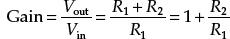
Unlike the inverting amplifier, this circuit’s output is in phase with its input—the output is “noninverted.” With real op amps, to minimize voltage offset errors due to input bias current, set R1||R2 = Rsource.
FIGURE 8.12
Solve for Vout in terms of V1 and V2.
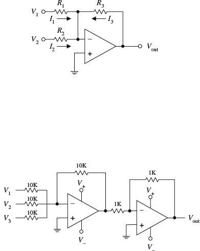
Since you know that V+ is grounded (0 V), and since you have feedback in the circuit, you can say that V+ = V− = 0 V (rule 4). Now that you know V+, solve for I1, I2, and I3 in order to come up with an expression relating Vout with V1 and V2. The currents are found by applying Ohm’s law:
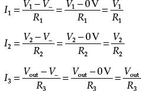
Like the last problem, assume that no current enters the op amp’s inverting terminal (rule 3). This means that you can apply Kirchhoff’s junction rule to combine I1, I2, and I3 into one expression: I3 = −(I1 + I2) = −I1 − I2. Plugging the results above into this expression gives the answer:
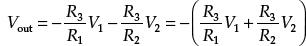
If you make R1 = R2 = R3, Vout = −(V1 + V2). Notice that the sum is negative. To get a positive sum, you can add an inverting stage, as shown in the lower circuit. Here, three inputs are added together to yield the following output: Vout = V1 + V2 + V3. Again, for some real op amps, an additional input-bias compensation resistor placed between the noninverting input and ground may be needed to avoid offset error caused by input bias current. Its value should be equal to the parallel resistance of all the input resistors.
FIGURE 8.13
DIFFERENCE AMPLIFIER
Determine Vout.
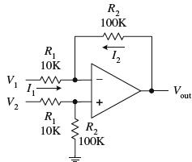
First, you determine the voltage at the noninverting input by using the voltage divider relation (again, assume that no current enters the inputs):
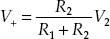
Next, apply Kirchhoff’s current junction law to the inverting input (I1 = I2):
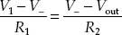
Using rule 4 (V+ = V−), substitute the V+ term in for V− in the last equation to get
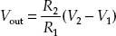
If you set R1 = R2, then Vout = V2 − V1.
FIGURE 8.14
Solve for Vout in terms of Vin.
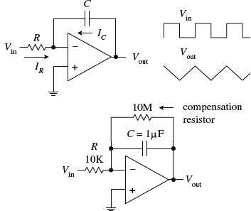
Because you have feedback, and because V+ = 0 V, you can say that V− is 0 V as well (rule 4). Now that you know V−, solve for IR and IC so that you can come up with an expression relating Vout with Vin. Since no current enters the input of an op amp (rule 3), the displacement current IC through the capacitor and the current IR through the resistor must be related by IR + IC = 0. To find IR, use Ohm’s law:
IC is found by using the displacement current relation:
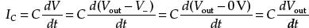
Placing these values of IC and IR into IR + IC = 0 and rearranging, you get the answer:
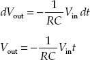
Such a circuit is called an integrator; the input signal is integrated at the output. Now, one problem with the first circuit is that the output tends to drift, even with the input grounded, due to nonideal characteristics of real op amps such as voltage offsets and bias current. A large resistor placed across the capacitor can provide dc feedback for stable biasing. Also, a compensation resistor may be needed between the noninverting terminal and ground to correct voltage offset errors caused by input bias currents. The size of this resistor should be equal to the parallel resistance of the input resistor and the feedback compensation resistor.
FIGURE 8.15
DIFFERENTIATOR
Solve for Vout in terms of Vin.
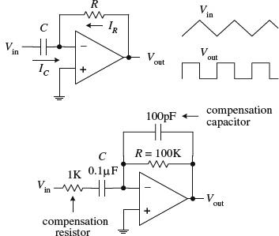
Since you know that V+ is grounded (0 V), and since you have feedback in the circuit, you can say that V− = V+ = 0 V (rule 4). Now that you know V−, solve for IR and IC so that you can come up with an expression relating Vout with Vin. Since no current enters the input of an op amp (rule 3), the displacement current IC through the capacitor and the current IR through the resistor must be related by IR + IC = 0. To find IC, use the displacement current equation:
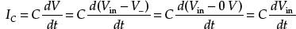
The current IR is found using Ohm’s law:
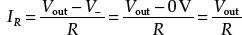
Placing these values of IC and IR into IR + IC = 0 and rearranging, you get the answer:
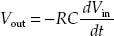
Such a circuit is called a differentiator; the input signal is differentiated at the output. The first differentiator circuit shown is not in practical form. It is extremely susceptible to noise due to the op amp’s high ac gain. Also, the feedback network of the differentiator acts as an RC low-pass filter that contributes a 90° phase lag within the loop and may cause stability problems. A more practical differentiator is shown below the first circuit. Here, both stability and noise problems are corrected with the addition of a feedback capacitor and input resistor. The additional components provide high-frequency rolloff to reduce high-frequency noise. These components also introduce a 90° lead to cancel the 90° phase lag. The effect of the additional components, however, limits the maximum frequency of operation—at very high frequencies, the differentiator becomes an integrator. Finally, an additional input-bias compensation resistor placed between the noninverting input and ground may be needed to avoid offset error caused by input bias current. Its value should be equal to the resistance of the feedback resistor.
FIGURE 8.16
8.5 Positive Feedback

Positive feedback involves sending output voltage back to the noninverting input. In terms of the theory, if you look at our old friend Vout = Ao(V+ − V−), the V+ term changes to fVout (f is a fraction of the voltage sent back), so you get Vout = Ao(fVout − V−). Now, an important thing to notice about this equation (and about positive feedback in general) is that the voltage fed back to the noninverting input will act to drive the op amp “harder” in the direction the output is going (toward saturation). This makes sense in terms of the equation; fVout adds to the expression. Recall that negative feedback acted in the opposite way; the fVout (= V−) term subtracted from the expression, preventing the output from “maxing out.” In electronics, positive feedback is usually a bad thing, whereas negative feedback is a good thing. For most applications, it is desirable to control the gain (negative feedback), while it is undesirable to go to the extremes (positive feedback).
There is, however, an important use for positive feedback. When using an op amp to make a comparator, positive feedback can make output swings more pronounced. Also, by adjusting the size of the feedback resistor, a comparator can be made to experience what is called hysteresis. In effect, hysteresis gives the comparator two thresholds. The voltage between the two thresholds is called the hysteresis voltage. By obtaining two thresholds (instead of merely one), the comparator circuit becomes more immune to noise that can trigger unwanted output swings. To better understand hysteresis, let’s take a look at the following comparator circuit that incorporates positive feedback.
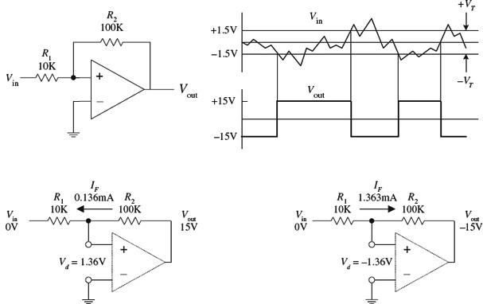
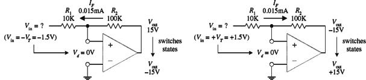
FIGURE 8.17
Assume that the op amp’s output is at positive saturation, say, +15 V. If Vin is 0 V, the voltage difference between the inverting input and noninverting input (Vd) will be 1.36 V. You get this by using Ohm’s law:
IF = (Vout − Vin)/(R1 + R2)
Vd = IFR1
This does not do anything to the output; it remains at +15 V. However, if you reduce Vin, there is a point when Vd goes to 0 V, at which time the output switches states. This voltage is called the negative threshold voltage (−VT). The negative threshold voltage can be determined by using the previous two equations—the end result being −VT = −Vout/(R2/R1). In the example, −VT = −1.5 V. Now, if the output is at negative saturation (−15 V) and 0 V is applied to the input, Vd = −1.36 V. The output remains at −15 V. However, if the input voltage is increased, there is a point where Vd goes to zero and the output switches states. This point is called the positive threshold voltage (+VT), which is equal to +Vout/(R2/R1). In the example, +VT = +1.5 V. Now the difference between the two saturation voltages is the hysteresis voltage: Vh = +VT − (−VT). In the example, Vh = 3 V.
8.6 Real Kinds of Op Amps
General Purpose
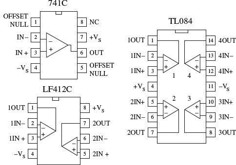
There is a huge selection of general-purpose and precision op amps to choose from. Precision op amps are specifically designed for high stability, low offset voltages, low bias currents, and low drift parameters. Because the selection of op amps is so incredibly large, I will leave it to you to check out the electronics catalogs to see what devices are available. When checking out these catalogs, you will find that op amps (not just general-purpose and precision) fall into one of the following categories (based on input circuitry): bipolar, JFET, MOSFET, or some hybrid thereof (e.g., BiFET). In general, bipolar op amps, like the 741 (industry standard), have higher input bias currents than either JFET or MOSFET types. This means that their input terminals have a greater tendency to “leak in” current. Input bias current results in voltage drops across resistors of feedback networks, biasing networks, or source impedances, which in turn can offset the output voltage. The amount of offset a circuit can tolerate ultimately depends on the application. Now, as I briefly mentioned earlier in this chapter, a compensation resistor placed between the noninverting terminal and ground (e.g., bipolar inverting amplifier circuit) can reduce these offset errors. (More on this in a minute.)
FIGURE 8.18
A simple way to avoid problems associated with input bias current is to use a FET op amp. A typical JFET op amp has a very low input bias current, typically within the lower picoamp range as compared with the nanoamp range for a typical bipolar op amp. Some MOSFET op amps come with even lower input bias currents, often as low as a few tenths of a picoamp. Though FET op amps have lower input bias current than bipolar op amps, there are other features they have that are not quite as desirable. For example, JFET op amps often experience an undesired effect called phase inversion. If the input common-mode voltage of the JFET approaches the negative supply too closely, the inverting and noninverting input terminals may reverse directions—negative feedback becomes positive feedback, causing the op amp to latch up. This problem can be avoided by using a bipolar op amp or by restricting the common-mode range of the signal. Here are some other general comments about bipolar and FET op amps: offset voltage (low for bipolar, medium for JFET, medium to high for MOSFET), offset drift (low for bipolar, medium for FET), bias matching (excellent for bipolar, fair for FET), bias/temperature variation (low for bipolar, fair for FET).
To avoid getting confused by the differences between the various op amp technologies, it is often easier to simply concentrate on the specifications listed in the electronics catalogs. Characteristics to look for include speed/slew rate, noise, input offset voltages and their drift, bias currents and their drift, common-mode range, gain, bandwidth, input impedance, output impedance, maximum supply voltages, supply current, power dissipation, and temperature range. Another feature to look for when purchasing an op amp is whether the op amp is internally or externally frequency compensated. An externally compensated op amp requires external components to prevent the gain from dropping too quickly at high frequencies, which can lead to phase inversions and oscillations. Internally compensated op amps take care of these problems with internal circuitry. All the terms listed in this paragraph will be explained in greater detail in a minute.
FIGURE 8.19
Programmable Op Amp
A programmable op amp is a versatile device that is used primarily in low-power applications (e.g., battery-powered circuits). These devices can be programmed with an external current for desired characteristics. Some of the characteristics that can be altered by applying a programming current include quiescent power dissipation, input offset and bias currents, slew rate, gain-bandwidth product, and input noise characteristics—all of which are roughly proportional to the programming current. The programming current is typically drawn from the programming pin (e.g., pin 8 of the LM4250) through a resistor and into ground. The programming current allows the op amp to be operated over a wide range of supply currents, typically from around a few microamps to a few millamps. Because a programmable op amp can be altered so as to appear as a completely different op amp for different programming currents, it is possible to use a single device for a variety of circuit functions within a system. These devices typically can operate with very low supply voltages (e.g., 1 V for the LM4250). A number of different manufacturers make programmable op amps, so check the catalogs. To learn more about how to use these devices, check out the manufacturers’ literature (e.g., for National Semiconductor’s LM4250, go to www.national.com).
FIGURE 8.20
These op amps are designed to be operated from a single positive supply (e.g., +12 V) and allow input voltages all the way down to the negative rail (normally tied to ground). Figure 8.21 shows a simple dc amplifier that uses a single-supply op amp. It is important to note that the output of the amplifier shown cannot go negative; thus it cannot be used for, say, ac-coupled audio signals. These op amps are frequently used in battery-operated devices.
FIGURE 8.21
Audio Amplifiers
These are closely related to conventional op amps but designed specifically to operate best (low audio band noise, crossover distortion, etc.) within the audio-frequency spectrum (20 to 20,000 Hz). These devices are used mainly in sensitive preamplifiers, audio systems, AM-FM radio receivers, servo amplifiers, and intercom and automotive circuits. There are a number of audio amplifiers to choose from. Some of these devices contain unique features that differ when compared with those of conventional op amps. For example, the popular LM386 low-voltage audio amplifier has a gain that is internally fixed at 20 but which can be increased to up to 200 with an external capacitor and resistor placed across its gain leads (pins 1 and 8). This device is also designed to drive low-impedance loads, such as an 8-Ω speaker, and runs off a single supply from +4 to +12 V—an ideal range for battery-powered applications. The LM383 is another audio amplifier designed as a power amplifier. It is a high-current device (3.5 A) designed to drive a 4-Ω load (e.g., one 4-Ω speaker or two 8-Ω speakers in parallel). This device also comes with thermal shutdown circuitry and a heat sink. We’ll take a closer look at audio amplifiers in Chap. 15.
FIGURE 8.22
8.7 Op Amp Specifications
Common-mode rejection ratio (CMRR). The input to a difference amplifier, in general, contains two components: a common-mode and a difference-mode signal. The common-mode signal voltage is the average of the two inputs, whereas the difference-mode signal is the difference between the two inputs. Ideally, an amplifier affects the difference-mode signals only. However, the common-mode signal is also amplified to some degree. The common-mode rejection ratio (CMRR), which is defined as the ratio of the difference signal voltage gain to the common-mode signal voltage gain provides an indication of how well an op amp does at rejecting a signal applied simultaneously to both inputs. The greater the value of the CMRR, the better is the performance of the op amp.
Differential-input voltage range. Range of voltage that may be applied between input terminals without forcing the op amp to operate outside its specifications. If the inputs go beyond this range, the gain of the op amp may change drastically.
Differential input impedance. Impedance measured between the noninverting and inverting input terminals.
Input offset voltage. In theory, the output voltage of an op amp should be zero when both inputs are zero. In reality, however, a slight circuit imbalance within the internal circuitry can result in an output voltage. The input offset voltage is the amount of voltage that must be applied to one of the inputs to zero the output.
Input bias current. Theoretically, an op amp should have an infinite input impedance and therefore no input current. In reality, however, small currents, typically within the nanoamp to picoamp range, may be drawn by the inputs. The average of the two input currents is referred to as the input bias current. This current can result in a voltage drop across resistors in the feedback network, the bias network, or source impedance, which in turn can lead to error in the output voltage. Input bias currents depend on the input circuitry of an op amp. With FET op amps, input bias currents are usually small enough not to cause serious offset voltages. Bipolar op amps, on the other hand, may cause problems. With bipolar op amps, a compensation resistor is often required to center the output. I will discuss how this is done in a minute.
Input offset current. This represents the difference in the input currents into the two input terminals when the output is zero. What does this mean? Well, the input terminals of a real op amp tend to draw in different amounts of leakage current, even when the same voltage is applied to them. This occurs because there is always a slight difference in resistance within the input circuitry for the two terminals that originates during the manufacturing process. Therefore, if an op amp’s two terminals are both connected to the same input voltage, different amounts of input current will result, causing the output to be offset. Op amps typically come with offset terminals that can be wired to a potentiometer to correct the offset current. I will discuss how this is done in a minute.
Voltage gain (AV). A typical op amp has a voltage gain of 104 to 106 (or 80 to 120 dB; gain in dB = 20 log10A011) at dc. However, the gain drops to 1 at a frequency called the unity-gain frequency fT, typically from 1 to 10 MHz—a result of high-frequency limitations in the op amp’s internal circuitry. I will talk more about high-frequency behavior in op amps in a minute.
Output voltage swing. This is the peak output voltage swing, referenced to zero, that can be obtained without clipping.
Slew rate. This represents the maximum rate of change of an op amp’s output voltage with time. The limitation of output change with time results from internal or external frequency compensation capacitors slowing things down, which in turn results in delayed output changes with input changes (propagation delay). At high frequencies, the magnitude of an op amp’s slew rate becomes more critical. A general-purpose op amp like the 741 has a 0.5 V/μs slew rate—a relatively small value when compared with the high-speed HA2539’s slew rate of 600 V/μs.
Supply current. This represents the current that is required from the power supply to operate the op amp with no load present and with an output voltage of zero.
Table 8.1 is a sample op amp specifications table.
TABLE 8.1 Sample Op Amp Specifications
8.8 Powering Op Amps
Most op amp applications require a dual-polarity power supply. A simple split ±15-V supply that uses a tapped transformer is presented in Chap. 11. If you are using batteries to power an op amp, one of the following arrangements can be used.
FIGURE 8.23
Now, it is often desirable to avoid split-supplies, especially with small battery-powered applications. One option in such a case is to use a single-supply op amp. However, as I pointed out a second ago, these devices will clip the output if the input attempts to go negative, making them unsuitable for ac-coupled applications. To avoid clipping while still using a single supply, it is possible to take a conventional op amp and apply a dc level to one of the inputs using a voltage-divider network. This, in turn, provides a dc offset level at the output. Both input and output offset levels are referenced to ground (the negative terminal of the battery). With the input offset voltage in place, when an input signal goes negative, the voltage applied to the input of the op amp will dip below the offset voltage but will not go below ground (provided you have set the bias voltage large enough, and provided the input signal is not too large; otherwise, clipping occurs). The output, in turn, will fluctuate about its offset level. To allow for input and output coupling, input and output capacitors are needed. The two circuits in Fig. 8.24 show noninverting and inverting ac-coupled amplifiers (designed for audio) that use conventional op amps that run off a single supply voltage.
FIGURE 8.24
In the noninverting circuit, the dc offset level is set to one-half the supply voltage by R1 and R2 to allow for maximum symmetrical swing. C1 (and R2) and C3 (and Rload) act as ac coupling (filtering) capacitors that block unwanted dc components and low-level frequencies. C1 should be equal to 1/(2πf3dBR1), while C3 should be equal to 1/(2πf3dBRload), where f3dB is the cutoff frequency (see Chaps. 9 and 15).
When using conventional op amps with single supply voltages, make sure to stay within the minimum supply voltage rating of the op amp, and also make sure to account for maximum output swing limitations and maximum common-mode input range.
8.9 Some Practical Notes
As a note of caution, never reverse an op amp’s power supply leads. Doing so can result in a zapped op amp IC. One way to avoid this fate is to place a diode between the op amp’s negative supply terminal and the negative supply, as shown in Fig. 8.25.
FIGURE 8.25
Also keep wires running from the power supply to the op amp’s supply terminals short and direct. This helps prevent unwanted oscillations/noise from arising in the output. Disturbances also may arise from variations in supply voltage. To eliminate these effects, place bypass capacitors from the supply terminals to ground as shown in Fig. 8.25. A 0.1-μF disk capacitor or a 1.0-μF tantalum capacitor should do the trick.
Both bipolar and JFET op amps can experience a serious form of latch if the input signal becomes more positive or negative than the respective op amp power supplies. If the input terminals go more positive than +VS + 0.7 V or more negative than −Vs − 0.7 V, current may flow in the wrong direction within the internal circuitry, short-circuiting the power supplies and destroying the device. To avoid this potentially fatal latch-up, it is important to prevent the input terminals of op amps from exceeding the power supplies. This feature has vital consequences during device turn-on; if a signal is applied to an op amp before it is powered, it may be destroyed at the moment power is applied. A “hard wire” solution to this problem involves clamping the input terminals at risk with diodes (preferably fast low-forward-voltage Schottky diodes; see Fig. 8.25). Current-limiting resistors also may be needed to prevent the diode current from becoming excessive. This protection circuitry has some problems, however. Leakage current in the diodes may increase the error. See manufacturers’ literature for more information.
8.10 Voltage and Current Offset Compensation
In theory, the output voltage of an op amp should be zero when both inputs are zero. In reality, however, a slight circuit imbalance within the internal circuitry can result in an output voltage (typically within the microvolt to millivolt range). The input offset voltage is the amount of voltage that must be applied to one of the inputs to zero the output—this was discussed earlier. To zero the input offset voltage, manufacturers usually include a pair of offset null terminals. A potentiometer is placed between these two terminals, while the pot’s wiper is connected to the more negative supply terminal, as shown in Fig. 8.26. To center the output, the two inputs can be shorted together and an input voltage applied. If the output saturates, the input offset needs trimming. Adjust the pot until the output approaches zero.
FIGURE 8.26
Notice the resistor placed between the noninverting terminal and ground within the inverting amplifier circuit shown in Fig. 8.26
right. What is the resistor used for? It is used to compensate for output voltage errors caused by a voltage drops across R1 and R2 as a result of input bias current. As discussed earlier, bipolar op amps tend to have larger input bias currents than FET op amps. With FET op amps, the input bias errors are usually so small (in the picoamp range) that the output voltage error is insignificant, and the compensation resistor is not needed. However, with bipolar op amps, this is not the case (input bias currents in the nanoamp range), and compensation is often necessary. Now, in the inverting amplifier, the bias current—assuming for now that the compensation resistor is missing—introduces a voltage drop equal to Vin = Ibias(R1||R2), which is amplified by a factor of −R2/R1. In order to correct this problem, a compensation resistor with a resistance equal the R1||R2 is placed between the noninverting terminal and ground. This resistor makes the op amp “feel” the same input driving resistance.
8.11 Frequency Compensation
For a typical op amp, the open-loop gain is typically between 104 and 106 (80 to 120 dB). However, at a certain low frequency, called the breakover frequency fB, the gain drops by 3 dB, or drops to 70.7 percent of the open-loop gain (maximum gain). As the frequency increases, the gain drops further until it reaches 1 (or 0 dB) at a frequency called the unity-gain frequency fT. The unity-gain frequency for an op amp is typically around 1 MHz and is given in the manufacturer’s specifications (see Fig. 8.27
left). The rolloff in gain as the frequency increases is caused by low-pass filter-like characteristics inherently built into the op amp’s inner circuitry. If negative feedback is used, an improvement in bandwidth results; the response is flatter over a wider range of frequencies, as shown in the far-left graph in Fig. 8.27. Now op amps that exhibit an open-loop gain drop of more than 60 dB per decade at fT are unstable due to phase shifts incurred in the filter-like regions within the interior circuitry. If these phase shifts reach 180° at some frequency at which the gain is greater than 1, negative feedback becomes positive feedback, which results in undesired oscillations (see center and right grafts in Fig. 8.27). To prevent these oscillations, frequency compensation is required. Uncompensated op amps can be frequency compensated by connecting an RC network between the op amp’s frequency-compensation terminals. The network, especially the capacitor, influences the shape of the response curve. Manufacturers will supply you with the response curves, along with the component values of the compensation network for a particular desired response.
FIGURE 8.27
Perhaps the easiest way to avoid dealing with frequency compensation is to buy an op amp that is internally compensated.
8.12 Comparators
In many situations, it is desirable to know which of two signals is bigger or to know when a signal exceeds a predetermined voltage. Simple circuits that do just this can be constructed with op amps, as shown in Fig. 8.28. In the noninverting comparator circuit, the output switches from low (0 V) to high (positive saturation) when the input voltage exceeds a reference voltage applied to the inverting input. In the inverting comparator circuit, the output switches from high to low when the input exceeds the reference voltage applied to the noninverting terminal. In the far-right circuit, a voltage divider (pot) is used to set the reference voltage.
Note that not all op amps are able to operate with a grounded negative supply, and a special-purpose comparator IC is a better approach.
FIGURE 8.28
Another, more popular method for comparing two voltages is to use a special IC called a comparator. A comparator, like an op amp, has an inverting input, a non-inverting input, an output, and power supply leads—its schematic looks like an op amp, too. However, unlike op amps, comparators are not frequency compensated and therefore cannot be used as linear amplifiers. In fact, comparators never use negative feedback (they often use positive feedback, as you will see). If negative feedback were used with a comparator, its output characteristics would be unstable. Comparators are specifically designed for high-speed switching—they have much larger slew rates and smaller propagation delays than op amps. Another important difference between a comparator and an op amp has to do with the output circuitry. Unlike an op amp, which typically has a push-pull output stage, a comparator uses an internal transistor whose collector is connected to the output and whose emitter is grounded. When the comparator’s noninverting terminal is less positive in voltage than the inverting terminal, the output transistor turns on, grounding the output. When the noninverting terminal is made more positive than the inverting terminal, the output transistor is off. In order to give the comparator a high output state when the transistor is off (V− < V+), an external pull-up resistor connected from a positive voltage source to the output is used. The pull-up resistor acts like the collector resistor in a transistor amplifier. The size of the pull-up resistor should be large enough to avoid excessive power dissipation yet small enough to supply enough drive to switch whatever load circuitry is used on the comparator’s output. The typical resistance for a pull-up resistor is anywhere from a few hundred to a few thousand ohms. Figure 8.29 shows a simple noninverting and inverting comparator circuit with pull-up resistors included. Both circuits have an output swing from 0 to +5 V.
FIGURE 8.29
Comparators are commonly used in analog-to-digital conversion. A typical application might be to connect a magnetic tape sensor or photodiode to an input of a comparator (with reference voltage set at the other input) and allow the sensor to drive the comparator’s output to a low or high state suitable for driving logic circuits. Analog-to-digital conversion is discussed in greater detail in Chap. 12.
8.13 Comparators with Hysteresis
Now there is a basic problem with both comparator circuits shown in Fig. 8.29. When a slowly varying signal is present that has a level near the reference voltage, the output will “jitter” or flip back and forth between high and low output states. In many situations having such a “finicky” response is undesirable. Instead, what is usually desired is a small “cushion” region that ignores small signal deviations. To provide the cushion, positive feedback can be added to the comparator to provide hysteresis, which amounts to creating two different threshold voltages or triggering points. The details of how hysteresis works within comparator circuits are given in the following two examples.
8.13.1 Inverting Comparator with Hysteresis
In the inverting comparator circuit shown in Fig. 8.30, positive feedback through R3 provides the comparator with two threshold voltages or triggering points. The two threshold voltages result from the fact that the reference voltage applied to the noninverting terminal is different when Vout is high (+15 V) and when Vout is low (0 V)—a result of feedback current. Let’s call the reference voltage when the output is high Vref1, and call the reference voltage when Vout is low Vref2. Now let’s assume that the output is high (transistor is off) and Vin >
Vref1. In order for the output to switch high, Vin must be greater than Vref1. However, what is Vref1? It is simply the reference voltage that pops up at the noninverting terminal when the output transistor is off and the output is high (+15 V).
To calculate Vref1, simply use the basic resistor network shown below the main circuit and to the left:
If Vin >
Vref1 when the output is already high, the output suddenly goes low—transistor turns on. With the output now low, a new reference voltage Vref2 is in place. To calculate Vref2, use the resistor network shown to the right of the first:
When the input voltage decreases to Vref2 or lower, the output suddenly goes high. The difference in the reference voltages is called the hysteresis voltage, or ΔVref:
Now, let’s try the theory out on a real-life design example.
Say we want to design a comparator circuit with a Vref1 = +6 V, a Vref2 = +5 V, and +VC = +15 V that drives a 100-kΩ load. The first thing to do is pick a pull-up resistor. As a rule of thumb,
Rpull-up < Rload
R3 >
Rpull-up
Why? Because heavier loading on Rpull-up (smaller values of R3 and Rload) reduce the maximum output voltage, thereby reducing the amount of hysteresis by lowering the value of Vref1. Pick Rpull-up = 3 kΩ, and choose R3 equal to 1 MΩ. Combining equations above gives us the practical formulas below the diagrams. With equation (1), calculate n, which is (6 V − 5 V)/5 V = 0.20. Next, using equation (2), find R1, which is simply (0.2)(1 M) = 200 kΩ. Using equation (3), find R3, which is 166 k/(15 V/6 V − 1) = 111 kΩ. These are the values presented in the circuit.
FIGURE 8.30
8.13.2 Noninverting Comparator with Hysteresis
What’s desired: Vin1 = 8 V, Vin2 = 6 V, given +VC = 10 V and load of 100 kΩ. Question: What should Vref, Rpull-up, R2, and R1 be?
First, choose Rpull-up < Rload, and R2 >
Rpull-up to minimize the effects of loading. For Rpull-up, choose 1 kΩ, and for R2, choose 1 M. Next, using the equations to the right, we find R1 and Vref.
Unlike the inverting comparator, the noninverting comparator only requires two resistors for hysteresis to occur. (Extra resistors are needed if you wish to use a voltage divider to set the reference voltage. However, these resistors do not have a direct role in developing the hysteresis voltage.) Also, the terminal to which the input signal is applied is the same location where the threshold shifting occurs—a result of positive feedback. The threshold level applied to the noninverting terminal is shifted about the reference voltage as the output changes from high (+VC) to low (0 V). For example, assume that Vin is at a low enough level to keep Vout low. For the output to switch high, Vin must rise to a triggering voltage, call it Vin1, which is found simply by using the resistor network shown to the far left:
As soon as Vout switches high, the voltage at the noninverting terminal will be shifted to a value that’s greater than Vref by:
To make the comparator switch back to its low state, Vin must go below ΔV+. In other words, the applied input voltage must drop below what is called the lower trip point, Vin2:
The hysteresis is then simply the difference between Vin1 and Vin2:
A practical design example is presented to the left.
FIGURE 8.31
8.14 Using Single-Supply Comparators
Like op amps, comparator ICs come in both dual- and single-supply forms. With single-supply comparators, the emitter and the “negative supply” are joined internally and grounded, whereas the dual-supply comparator has separate emitter (ground) and negative supply leads. A few sample comparator ICs, along with two single-supply comparator circuits are shown below.
FIGURE 8.32
8.15 Window Comparator
A window comparator is a very useful circuit that changes its output state whenever the input voltage is anywhere between predetermined high and low reference voltages. The region between these two reference voltages is called the window. Figure 8.33 shows a simple window comparator built with two comparators (op amps also can be used). In the left-most circuit, the window is set between +3.5 V (Vref,high) and +6.5 V(Vref,low). If Vin is below +3.5 V, the lower comparator’s output is grounded, while the upper comparator’s output floats. Only one ground is needed, however, to make Vout = 0 V. If Vin is above +6.5 V, the upper comparator’s output is grounded, while the lower comparator’s output floats—again Vout goes to 0 V. Only when Vin is between +3.5 and +6.5 V will the output go high (+5 V). The right-most circuit uses a voltage-divider network to set the reference voltages.
FIGURE 8.33
8.16 Voltage-Level Indicator
A simple way to make a voltage-level indicator is to take a number of comparators that share a common input and then supply each comparator with a different reference or triggering voltage, as shown in Fig. 8.34. In this circuit, the reference voltage applied to a comparator increases as you move up the chain of comparators (a result of the voltage-divider network). As the input voltage increases, the lower comparator’s output is grounded first (diode turns on), followed in succession by the comparators (LEDs) above it. The potentiometer provides proportional control over all the reference voltages.
FIGURE 8.34
8.17 Applications
Op Amp Output Drivers (for Loads That Are Either On or Off)
FIGURE 8.35
Comparator Output Drivers
FIGURE 8.36
Op Amp Power Booster (AC Signals)
There are times when an op amp needs a boost in output power-handling capacity while at the same time maintaining both positive and negative output swings. A simple way to increase the output power while maintaining the swing integrity is to attach a complementary transistor push-pull circuit to the op amp’s output, as shown in this circuit. At high speeds, additional biasing resistors and capacitors are needed to limit crossover distortion. At low speeds, negative feedback helps eliminate much of the crossover distortion.
FIGURE 8.37